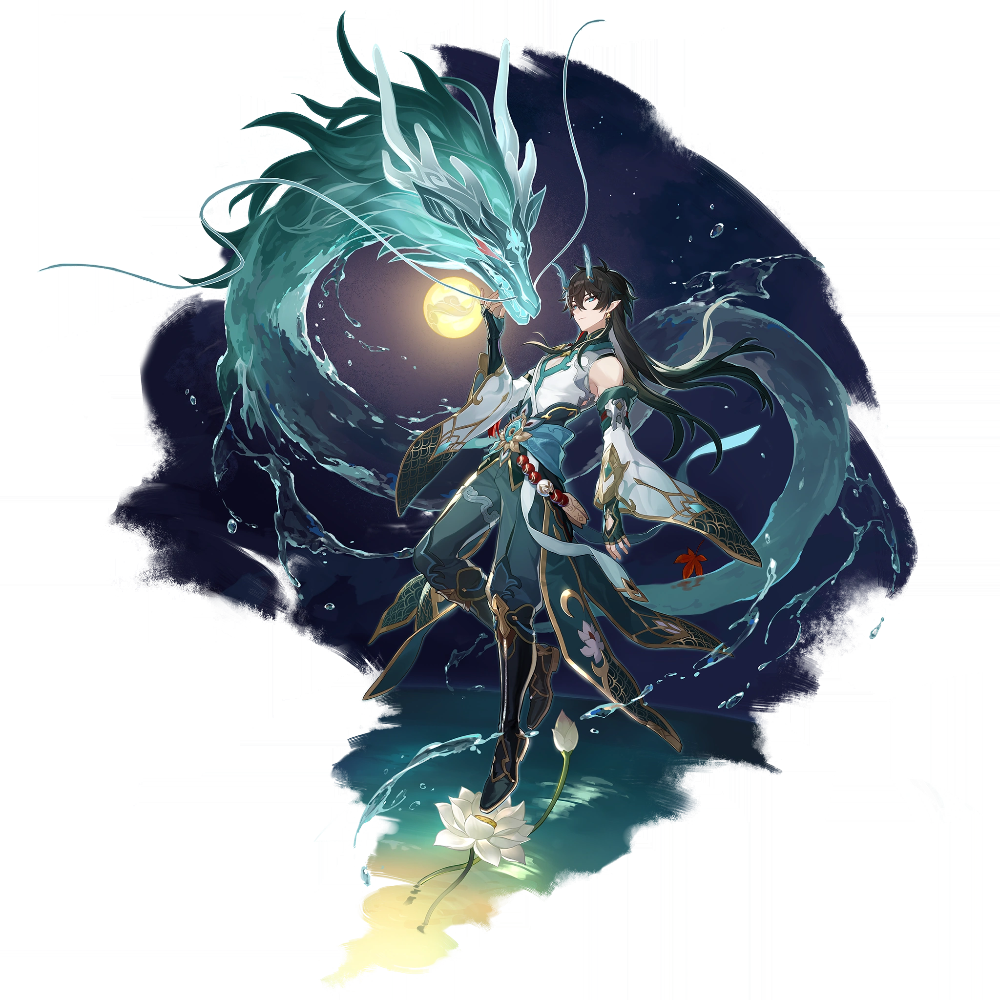

Дань Хэн: Пожиратель Луны
| Язык | Официальное название |
| Английский | Dan Heng: Imbibitor Lunae |
| Русский | Дань Хэн: Пожиратель Луны |
| Японский | 丹タン恒コウ・・飲イン月ゲツ |
| Китайский | 丹恆•飲月 |
| Корейский | 단항•음월 |
Дань Хэн принял силу его прошлого воплощения — Пожирателя Луны, что раскрывает истинный облик видьядхара. Тот, кто принимает величественную корону из рогов, принимает все достоинства и недостатки того человека. Но он навсегда останется лишь самим собой.

Редкость: ✦ ✦ ✦ ✦ ✦
Путь: Разрушение
Тип урона: Мнимый
Статус: Жив